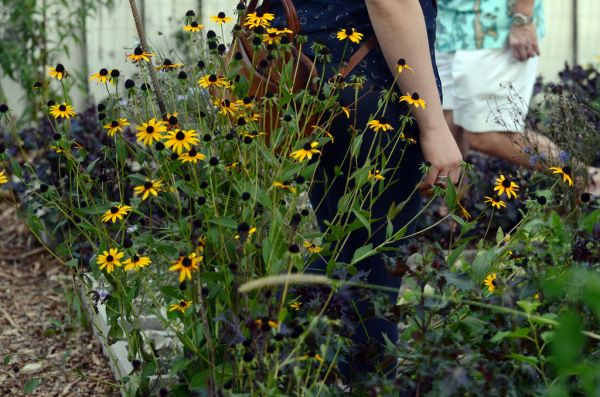
Zu diesem Thema gibt es gerade nichts.
Heute13
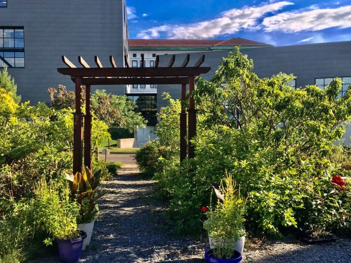
Gesellschaft DE
Fall Christina Block: Warum die Richter auf den Tonaufnahmen der »Zeit« bestehen
Quelle: Spiegel · 27. Oktober 2026 Bild: Carrotflower Productions International · BY-SA 2.0
Sport DE
Eurocup: ratiopharm Ulm gewinnt bei Lietkabelis Panevezys
Quelle: SWR Aktuell · 27. Oktober 2026 Bild: Fuzzy Gerdes · BY 2.0
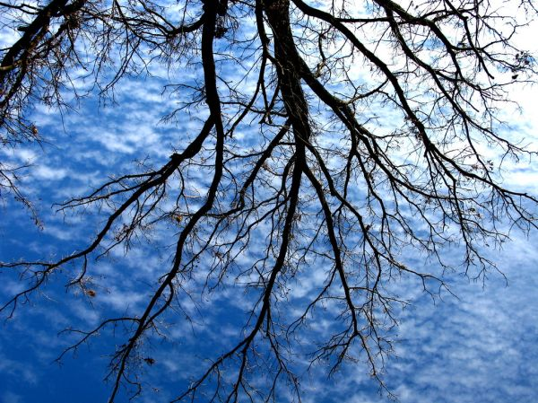
Gesellschaft DE
academixerin Hannah Blank begeistert mit Solodebüt
Quelle: MDR Aktuell · 27. Oktober 2026 Bild: OakleyOriginals · BY 2.0
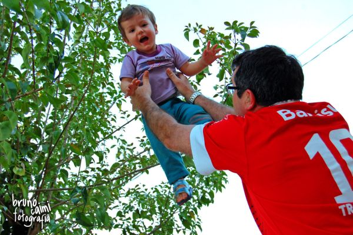
Gesellschaft DE
Vorbild für andere Regionen?: Melania Trump: Waffenruhe in Oleschky ausgeweitet
Quelle: ntv · 27. Oktober 2026 Bild: Bruno_Caimi · BY 2.0
Wissenschaft & Technik EN
FDA-Approval for Drill-Free Cavity Care May Be Imminent After Great Phase 3 Treatment Trial
Quelle: Good News Network · 27. Oktober 2026 Illustration
Sport EN
High School Baseball Team Has All the Vibes of Success But Never Won a Game: Kids Don’t Mind
Quelle: Good News Network · 27. Oktober 2026 Illustration
Tiere & Natur EN
NGO Celebrates 70 Million Amazon Acres Conserved After Protecting Are Called a ‘Link of Life’
Quelle: Good News Network · 27. Oktober 2026 Bild: jurvetson · BY 2.0
Gesellschaft EN
Family That’s Fostered 500 Children Saved from Housefire Thanks to Stranger’s Wrong Turn
Quelle: Good News Network · 27. Oktober 2026 Illustration
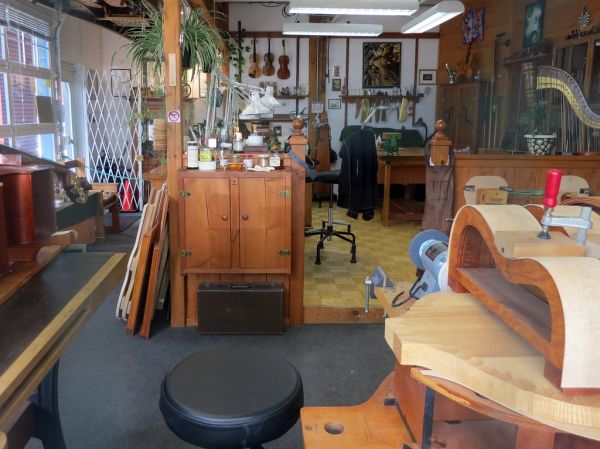
Wirtschaft & Arbeit DE
Keine Verbesserung zum Vorjahr: Mercedes-Benz stutzt Gewinnprognose überraschend zurecht
Quelle: ntv · 27. Oktober 2026 Bild: Ruth and Dave · BY 2.0
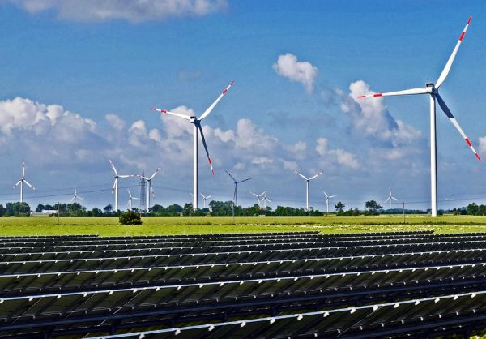
Umwelt & Klima DE
Konsum und Investitionen: Wie Superreiche das Klima belasten
Quelle: Tagesschau · 27. Oktober 2026
Kultur EN
New Jersey Transit is turning commuter stations into art galleries
Quelle: Optimist Daily · 27. Oktober 2026 Illustration
Tiere & Natur EN
5 research-backed ways to banish aches and feel better at your desk
Quelle: Optimist Daily · 27. Oktober 2026 Illustration
Gestern10
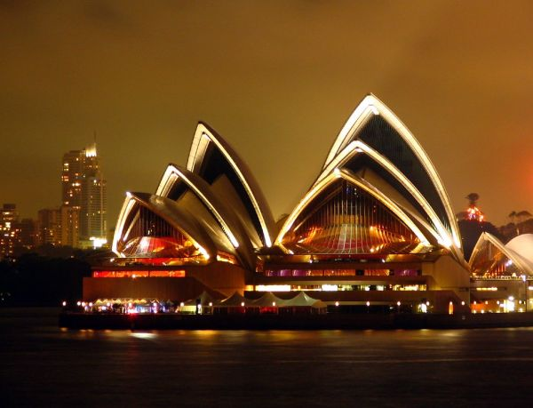
Kultur EN
Stunning New Opera House Opens With a Gravity-Defying Grand Staircase (LOOK)
Quelle: Good News Network · 26. Oktober 2026 Bild: wilf2 · BY-SA 2.0
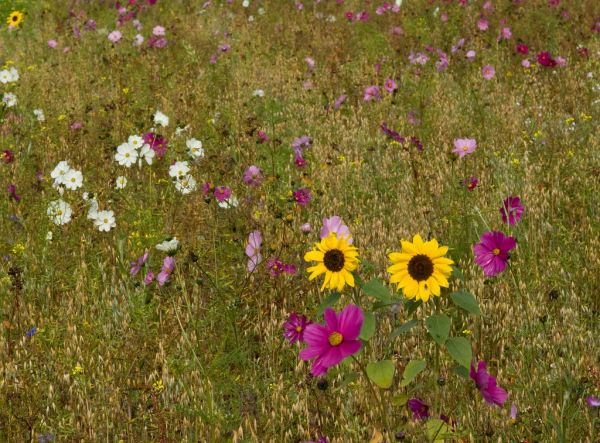
Tiere & Natur DE
Brasilien: Was heißt Lula da Silvas Sieg für Regenwald und Klimaschutz?
Quelle: MDR Aktuell · 26. Oktober 2026 Bild: Floortje Walraven · BY 2.0
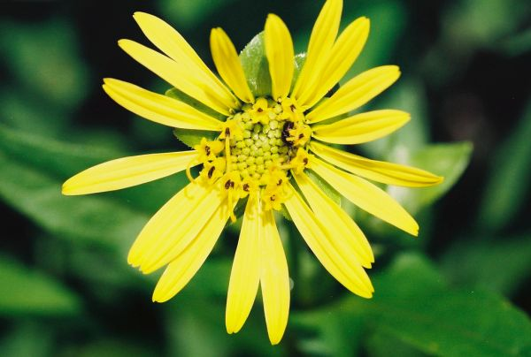
Tiere & Natur DE
Gutenberg-Preis der Uni Mainz: Haben Maus & Elefant schon gratuliert?
Quelle: SWR Aktuell · 26. Oktober 2026 Bild: jlodder · BY 2.0
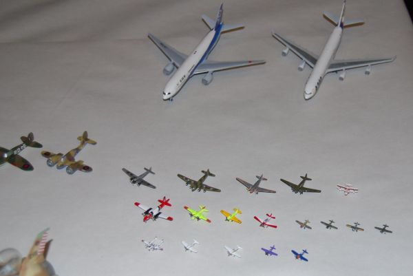
Wissenschaft & Technik EN
Tiny Scottish Island’s Little Historical Society Makes Massive Discovery
Quelle: Good News Network · 26. Oktober 2026 Bild: wbaiv · BY-SA 2.0
Gesellschaft EN
Free tool helps young men to take responsibility for sexual harm
Quelle: Positive News · 26. Oktober 2026 Illustration
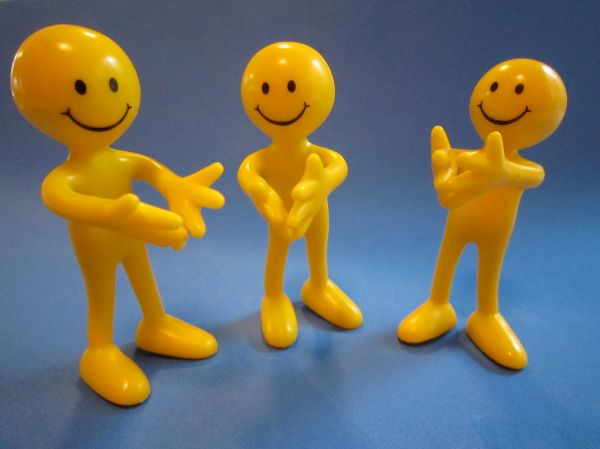
Gesellschaft DE
Im Saarland wird Housing First Regelleistung, Aus für Nerzzucht in Dänemark, keine Fahrzeuge mehr in der Oxford Street
Quelle: goodnews.eu · 26. Oktober 2026 Bild: katerha · BY 2.0
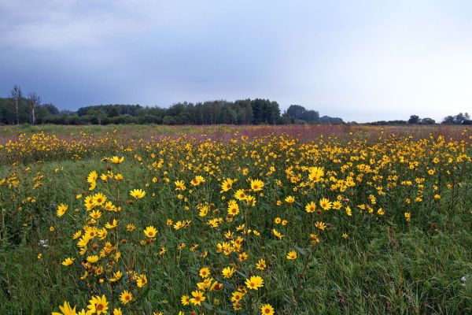
Tiere & Natur DE
Renaturierung von Flüssen: Wirklich so eine gute Idee?
Quelle: MDR Aktuell · 26. Oktober 2026 Bild: USFWS Mountain Prairie · BY 2.0
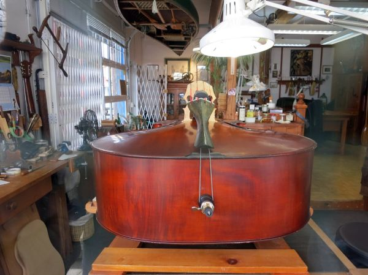
Wirtschaft & Arbeit DE
Info-Date am Morgen: Studentenbewegung gewinnt Wahl in Serbien ++ Weniger Unfälle in BW wegen Tempo 40
Quelle: SWR Aktuell · 26. Oktober 2026 Bild: Ruth and Dave · BY 2.0
Gesellschaft EN
NYC food pantries are now stocking pet food for struggling households
Quelle: Optimist Daily · 26. Oktober 2026 Illustration
Gesellschaft EN
Age-by-age Halloween tips from a board-certified pediatrician
Quelle: Optimist Daily · 26. Oktober 2026 Bild: Artiom Ponkratenko · BY 2.0
Diese Woche10
Gesundheit DE
Schmerz lass nach: 6 neue Ideen aus der Schmerztherapie
Quelle: goodnews.eu · 24. Oktober 2026 Bild: TheNoxid · BY 2.0
Kultur EN
How ‘Artivism’ Is Driving the Resistance in Paris
Quelle: Reasons to be Cheerful · 23. Oktober 2026 Illustration
Tiere & Natur EN
What went right this week: the good news that matters
Quelle: Positive News · 23. Oktober 2026 Illustration
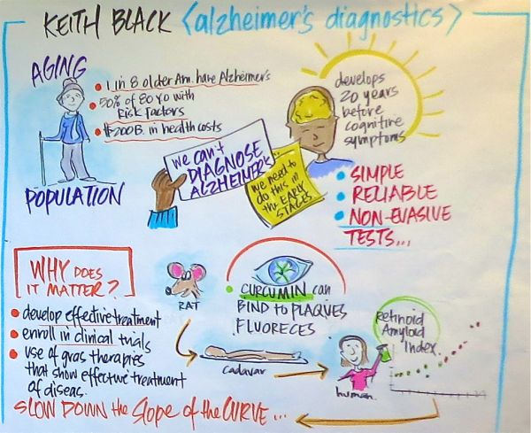
Gesundheit EN
New research identifies the exact spot where Alzheimer’s protein tangles lock in
Quelle: Optimist Daily · 23. Oktober 2026 Bild: jurvetson · BY 2.0
Gesellschaft EN
The Giving Grove: how Kansas City’s free community orchards became a national model
Quelle: Optimist Daily · 23. Oktober 2026 Bild: Bold Frontiers · BY 2.0
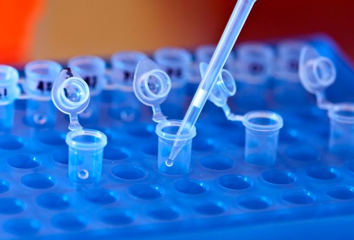
Wissenschaft & Technik DE
Großes Forschungsprojekt zu Blutstammzellen startet, E-Scooter in Hamburg sollen langsamer fahren, Gericht stärkt Privatsphäre bei Google Maps
Quelle: goodnews.eu · 22. Oktober 2026 Bild: umseas · BY 2.0
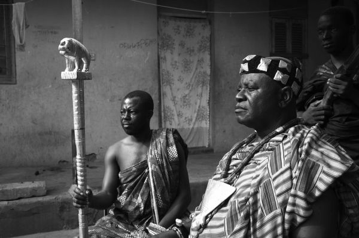
Umwelt & Klima EN
The farmer growing a future under Ghana’s trees
Quelle: Positive News · 22. Oktober 2026 Bild: Alfred Weidinger · BY 2.0
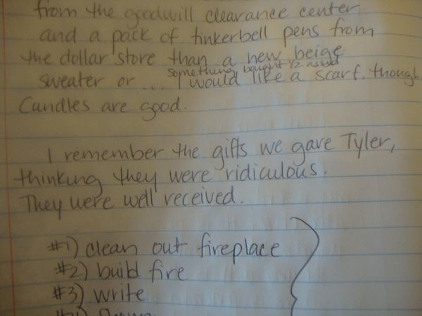
Gesellschaft EN
‘Writing is a way of dealing with things’
Quelle: Positive News · 21. Oktober 2026 Bild: juliejordanscott · BY 2.0
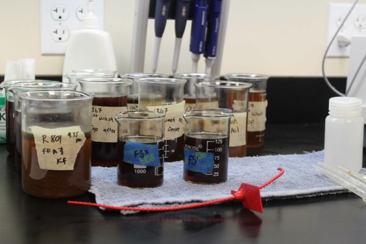
Wissenschaft & Technik DE
Europride kommt 2029 nach Dresden, Solarzellen auf Lkw-Dächern sparen Sprit und Strom, neue Technik macht Gedanken hörbar
Quelle: goodnews.eu · 20. Oktober 2026 Bild: UnitedSoybeanBoard · BY 2.0
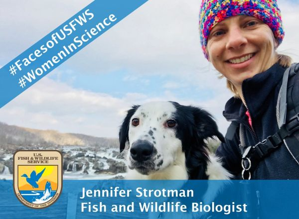
Tiere & Natur EN
The new certification scheme helping solar farms become havens for wildlife
Quelle: Positive News · 20. Oktober 2026 Bild: USFWS Pacific Southwest Region · PDM 1.0
Älter6
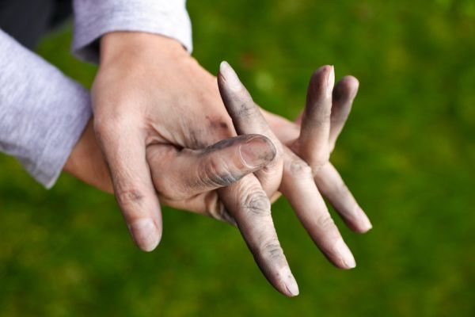
Gesellschaft DE
New York City will Pferdekutschen bis 2028 abschaffen, die Spitzenreiter beim ÖPNV, historischer Tiefstand bei Amazonas-Abholzung
Quelle: goodnews.eu · 19. Oktober 2026 Bild: Håkan Dahlström · BY 2.0
Tiere & Natur EN
A Wall Meant to Divide Is Uniting Left and Right in Texas
Quelle: Reasons to be Cheerful · 19. Oktober 2026 Bild: Bernt Rostad · BY 2.0
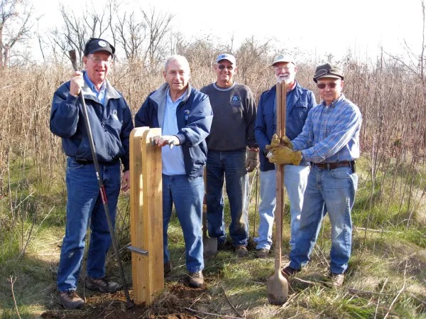
Tiere & Natur EN
Volunteers became salmon, deer and earthworms. Then they set out to save their river
Quelle: Positive News · 19. Oktober 2026 Bild: U. S. Fish and Wildlife Service - Northeast Region · PDM 1.0
Gesundheit DE
Gut für Körper und Geist: 8 gute Nachrichten
Quelle: goodnews.eu · 17. Oktober 2026 Bild: TheNoxid · BY 2.0
Gesellschaft EN
The Library Is Closed. Feel Free to Come In.
Quelle: Reasons to be Cheerful · 15. Oktober 2026 Bild: ell brown · BY 2.0
Gesellschaft EN
Teenagers Worldwide Are Tackling the Plastics Crisis
Quelle: Reasons to be Cheerful · 14. Oktober 2026 Illustration